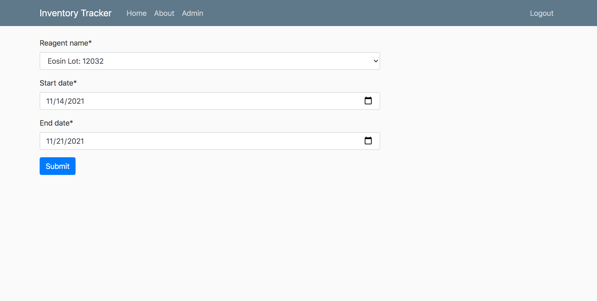
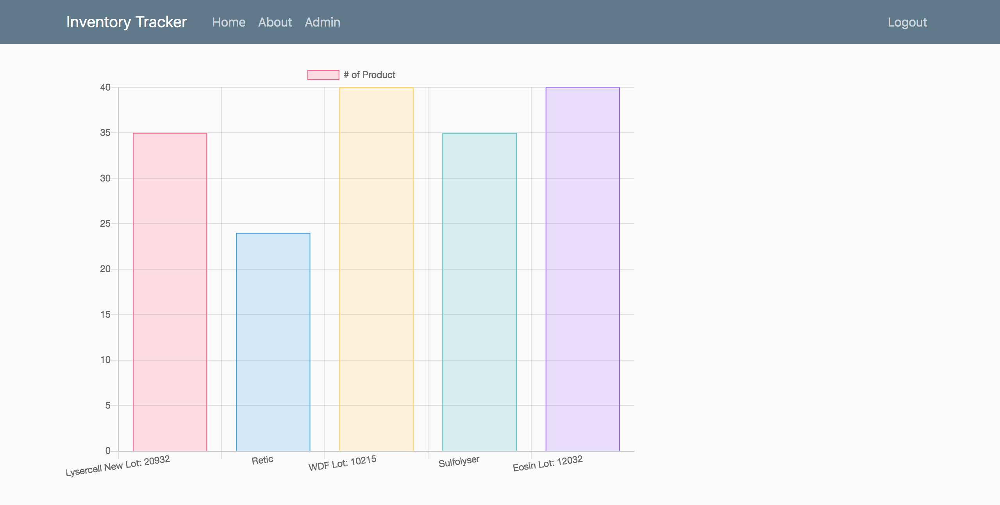

Inventory Tracker
Inventory Tracker is my first attempt at designing and building my own web application. This application allows the user to keep a running log of current inventory. The application features an adminstration page where a user can add and edit inventory. Once a material is used, an employee can go to the reagent checkout button and remove the material from the inventory log. Inventory tracker was built using the Django Framework.
 Inventory Tracker allows for tracking of total use of a material in a chosen timeframe. The user may select a desired timeframe and then be provided with how a much chosen material was used in that timeframe. A comprehensive query can also be made to provide the total use of all inventory in a selected timeframe. Inventory Tracker also offers a graph display of current inventory to allow for a quick view of stock.
View CodeBack To Homepage